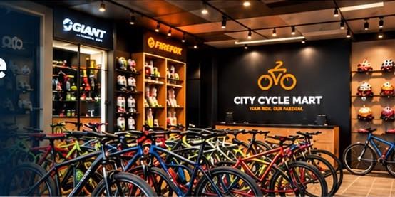
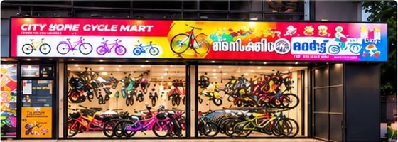

YOUR TRUSTED DESTINATION
For Every Ride
At City Cycle Mart, we bring you a wide range of quality bicycles and accessories to help you ride better, stronger and further.

ABOUT US
Welcome to City Cycle Mart
City Cycle Mart is your local destination for quality bicycles, accessories and genuine support. We offer a wide range of bikes for all age groups and riding styles, along with the right accessories to make every ride safer and more enjoyable.
Whether you are a beginner, a fitness enthusiast or an adventure seeker, we are here to help you find the perfect cycle and the right guidance for your journey.
What We Offer
Everything you need for a better cycling experience.
Why Choose City Cycle Mart?

Visit Our Showroom
Come and experience the best bikes and accessories in person.
Velliyode – Vanimal +91 85908 58064 9:00 AM - 8:00 PM Get DirectionsReady to Ride?
Explore our full range of bicycles and accessories.